JS中基本类型和引用类型分别指的的是什么？有何区别？
分享人：朱春雨
目录
1.背景介绍
2.知识剖析
3.常见问题
4.解决方案
5.编码实战
6.扩展思考
7.参考文献
8.更多讨论
1.背景介绍
JS基本类型
字符串（String） length 来计算字符串的长度：var name= “buff”； var 创建一个变量，变量名为 name， "buff"为字符串 字符串可以是单引号或双引号中的任意文本。 全局方法String() 可以将数字转换为字符串。String() 该方法可用于任何类型的数字，字母，变量，表达式 toString()也是有同样的效果，不能转Null，undefined两种类型 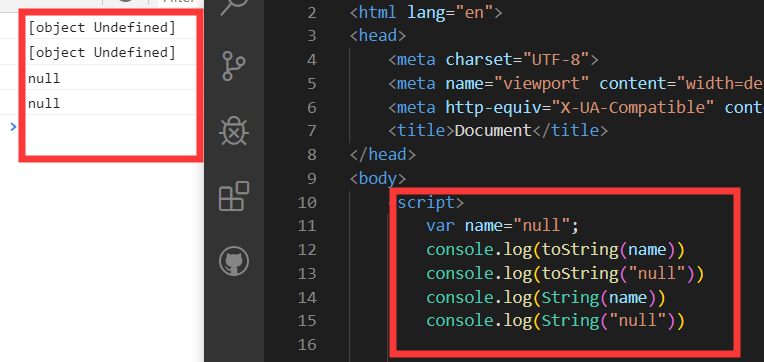
自动转换类型
5 + null // 返回 5 null 转换为 0
"5" + null // 返回"5null" null 转换为 "null"
"5" + 1 // 返回 "51" 1 转换为 "1"
"5" - 1 // 返回 4 "5" 转换为 5
数字(Number) 全局方法 Number() 可将日期转换为数字。 d = new Date(); Number(d) 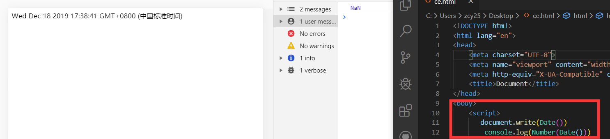 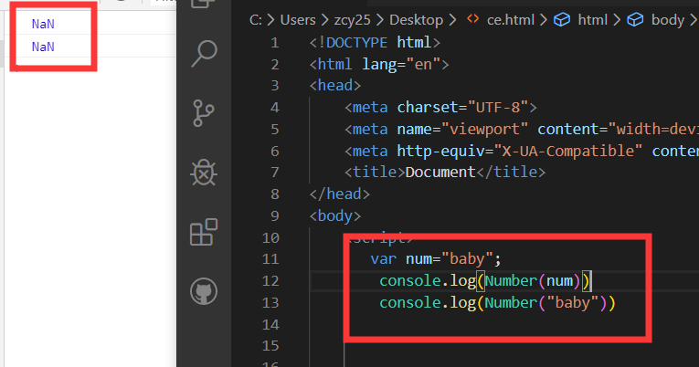
布尔(Boolean)只有两个值：true、false。 undefined，null，NAN,""，0，false为false，其余全为true 空数组是true，对象也是true，一般用空数组length判断数组有没有数据 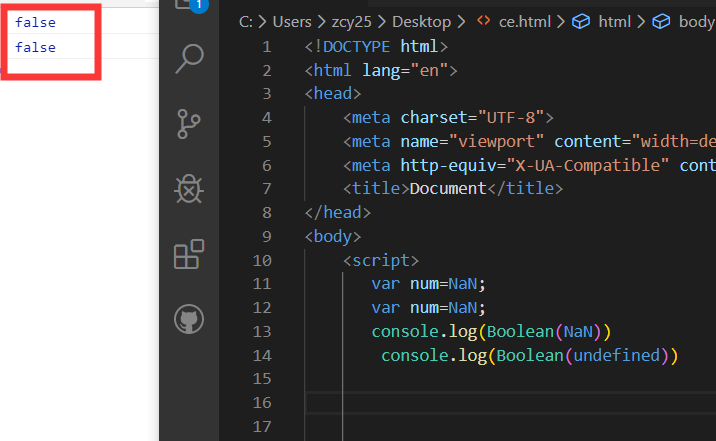
写法规范 在js中写Boolean和判断相关的代码时，都会要求遵循一定的编码规范： 用===判断来代替==，能用全等的地方永远用全等而不要用== 因为===会先判断数据类型，数据类型不同直接返回false 而==会先进行数据转换 同理推荐使用!==而不是!= 例如 console.log('0'==0);//true console.log('0'===0);//false 基本上就是 undefined等于undefined undefined等于null NaN不等于任何 甚至不等于另一个NaN 除了上述类型有数字优先转数字 都是对象保证引用同一对象，否则将对象转ToPrimitive（抽象操作）再对比 在if中判断字符串和数组有没有值，要采用简写 写成if(val)和if(arr.length) 而不是if(val!=='')和if(arr.length>0)
对空（Null）
Null类型只有一个值，即null。null用来表示尚未存在的对象，常用来表示函数企图返回一个不存在的对象。
在 JS 中 null 表示 "什么都没有"。
null是一个只有一个值的特殊类型。表示一个空对象引用。
用 typeof 检测 null 返回是object。
可以设置为 null 来清空对象:
var person = null;
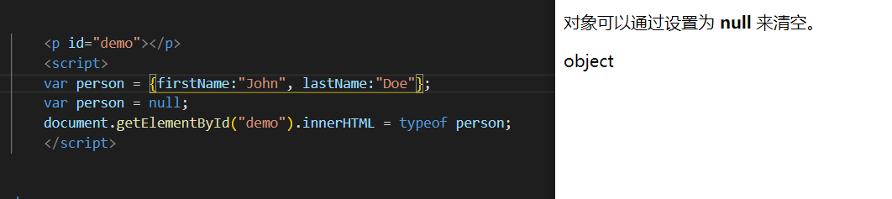
var person = undefined; 变量可以通过设置 undefined 来清空。

未定义（Undefined） Undefined类型也只有一个值，即undefined。当声明的变量还未被初始化时，变量的默认值为undefined。 typeof 一个没有值的变量会返回 undefined。 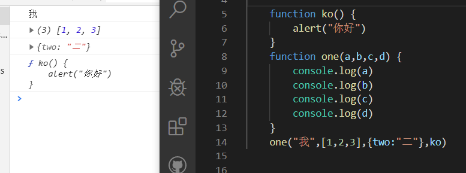
Symbol 生成一个全局唯一的值。 Symbol 数据类型的特点是唯一性，即使是用同一个变量生成的值也不相等。
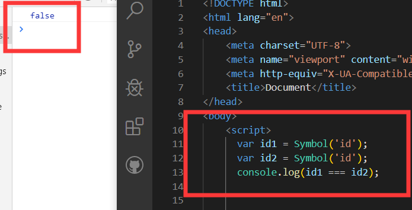
引用数据类型：
对象(Object) 对象分为键和值 var name= { age : "53岁"； age是键，53岁是值 可以在对象里设置函数，引用函数需要加（），不加引用函数表达式，对象是全局属性 } 数组(Array) 数组下标是基于零的，所以第一个是 [0]，第二个是 [1]，以此类推。可以用for循环来实现引用整个数组 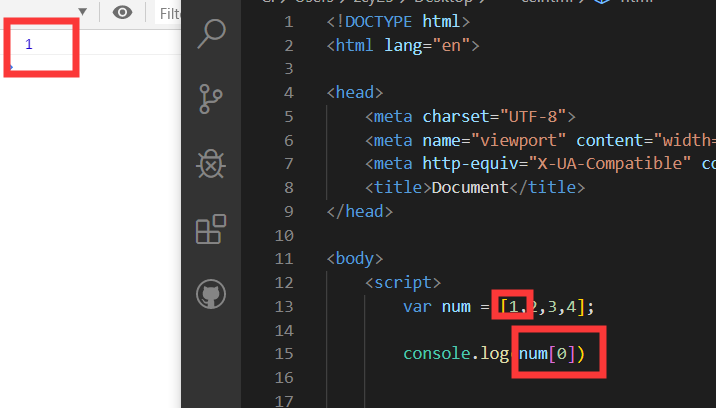函数(Function)
function 声明一个函数,可以在函数内引用，可以在函数中声明JS中函数有两种命名方式
1、一种是声明式
声明式会导致函数提升，function会被解释器优先编译。即我们用声明式写函数，可以在任何区域声明，不会影响我们调用 function XXX(){}
一种是函数表达式
函数表达式中的function不会出现函数提升。而是JS解释器逐行解释，因此如果调用在函数表达式之前，则会调用失败
var k = function(){}
fn1();
function fn1(){} 可以正常调用
fn2();
var fn2 = function(){} 无法调用
对函数表达式加上()，是可以直接调用的
但是如果是对声明式的后部加上()则是会被编译器忽略。v var fn2 = function(){}(); 对，就是这样
function fn1(){}(); 会被忽略v 而平常的function(){}则是一种声明式，如果加上()括号后，则会被编译器认为是函数表达式，（加上+-号都可以），从而可以用()来直接调用
（function fn1(){}）();
叹号后面跟函数!function
和加号后面跟函数+function
都是跟(function(){})();这个函数是一个意思，都是告诉浏览器自动运行这个匿名函数的，因为!+()这些符号的运算符是最高的，所以会先运行它们后面的函数
2.知识剖析
引用类型与基本类型的区别
栈内存中的变量一般都是已知大小或者有范围上限的，算作一种简单存储。 而堆内存主要负责像对象Object这种变量类型的存储，堆内存存储的对象类型数据对于大小这方面，一般都是未知的，（所以这大概也是为什么null作为一个object类型的变量却存储在栈内存中的原因）。
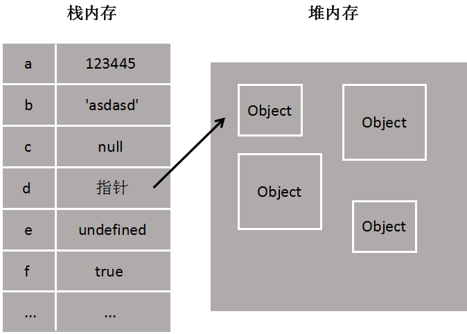栈内存 初始栈内存只有a，栈内存添加b，b复制a。此时b是10，栈内存b保存了另一个值，但是并不影响a的值。
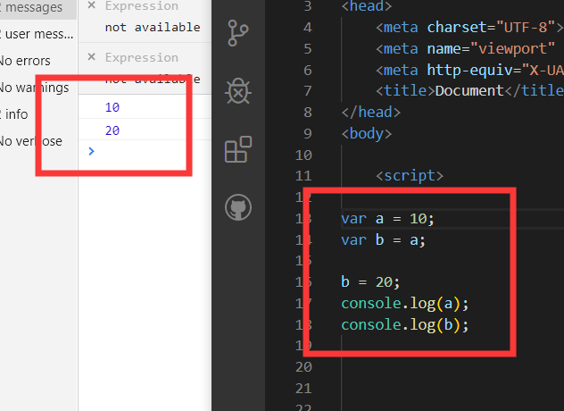one1在栈内存中，值指向堆内存，one2等于one1，它们的指针指向一个堆内存对象，所以one1也可以访问one2
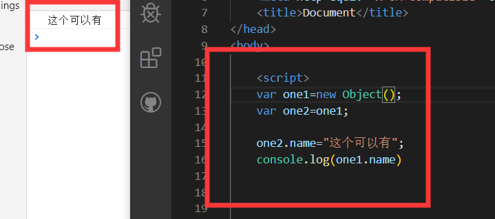c直接在栈中修改，不能指向a堆内存中。
var a = [1,2,3,4,5];
var b = a;//传址 ,对象中传给变量的数据是引用类型的，会存储在堆中；
var c = a[0];//传值，把对象中的属性/数组中的数组项赋值给变量，这时变量C是基本数据类型，存储在栈内存中；改变栈中的数据不会影响堆中的数据
alert(b);//1,2,3,4,5
alert(c);//1
//改变数值
b[4] = 6;
c = 7;
alert(a[4]);//6
alert(a[0]);//1
*原始类型：在栈中，因为占据空间是固定的，可以将他们存在较小的内存中-栈中，这样便于迅速查询变量的值 *引用类型：存在堆中，栈中存储的变量，只是用来查找堆中的引用地址。 这是因为：引用值的大小会改变，所以不能把它放在栈中，否则会降低变量查寻的速度。相反，放在变量的栈空间中的值是该对象存储在堆中的地址。地址的大小是固定的，所以把它存储在栈中对变量性能无任何负面影响
2、不同的内存分配带来不同的访问机制
在JS中是不允许直接访问保存在堆内存中的对象的，所以在访问一个对象时，首先得到的是这个对象在堆内存中的地址，然后再按照这个地址去获得这个对象中的值，这就是传说中的按引用访问。 而原始类型的值则是可以直接访问到的。
3、复制变量时的不同
1）原始值：在将一个保存着原始值的变量复制给另一个变量时，会将原始值的副本赋值给新变量，此后这两个变量是完全独立的，他们只是拥有相同的value而已。
2）引用值：在将一个保存着对象内存地址的变量复制给另一个变量时，会把这个内存地址赋值给新变量，也就是说这两个变量都指向了堆内存中的同一个对象，他们中任何一个作出的改变都会反映在另一个身上。（这里要理解的一点就是，复制对象时并不会在堆内存中新生成一个一模一样的对象，只是多了一个保存指向这个对象指针的变量罢了）。多了一个指针
4、参数传递的不同（把实参复制给形参的过程）
原始值：只是把变量里的值传递给参数，之后参数和这个变量互不影响。
引用值：对象变量它里面的值是这个对象在堆内存中的内存地址，这一点要时刻铭记在心！
因此它传递的值也就是这个内存地址，这也就是为什么函数内部对这个参数的修改会体现在外部的原因了，因为它们都指向同一个对象。
3.常见问题
4.解决方案
5.编码实战
6.扩展思考
7.参考文献
8.更多讨论
感谢观看